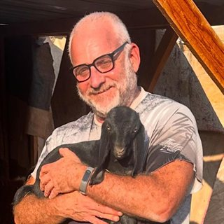
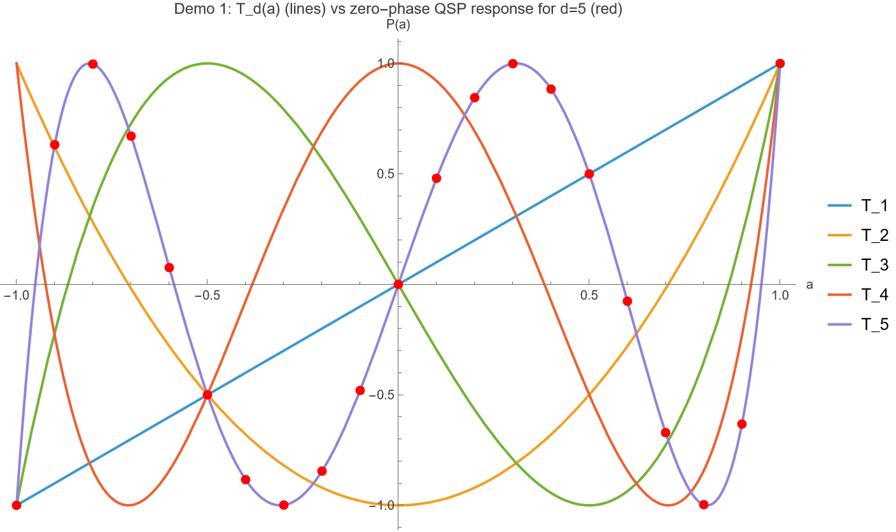
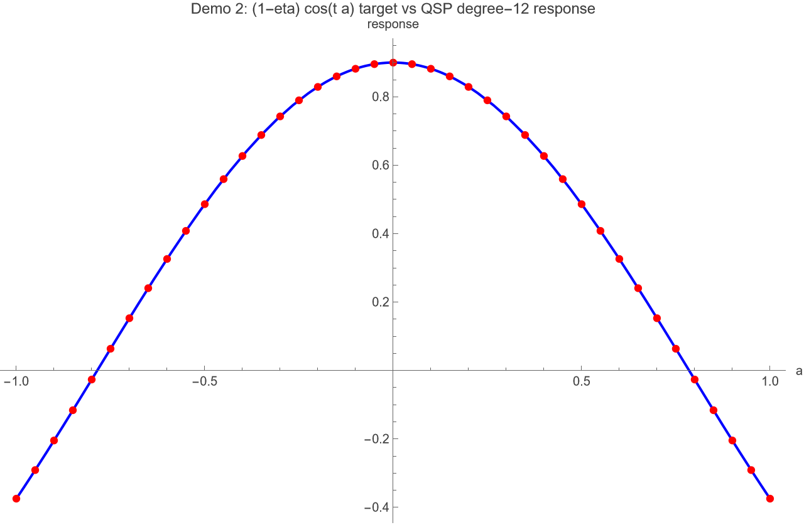
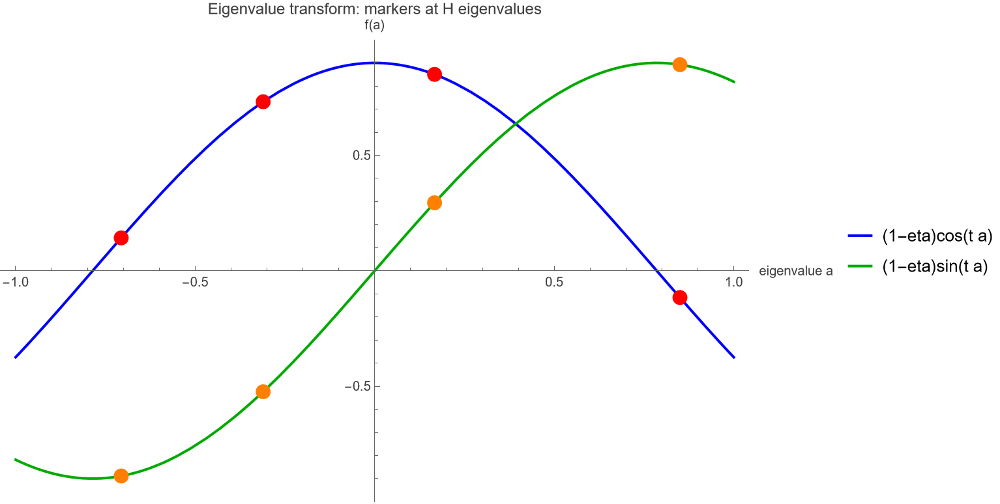
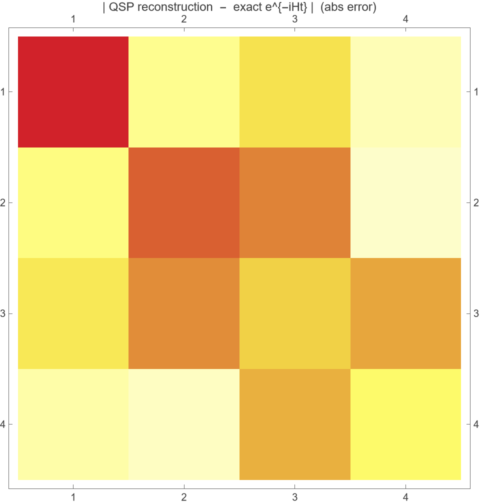
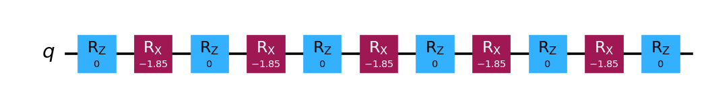
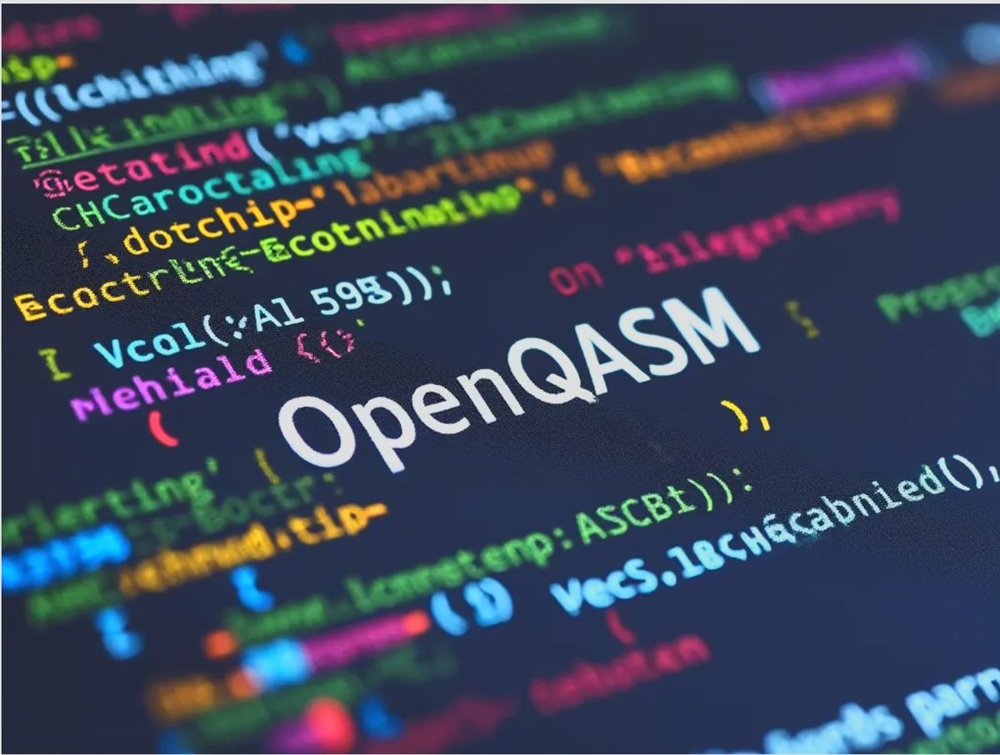

Grand Unification of
Quantum Algorithms
A research paper turned into verified, runnable quantum circuits — an end‑to‑end pipeline that derives Quantum Signal Processing symbolically, checks every identity to machine precision, and exports portable OpenQASM.

One primitive, most known quantum algorithms
Martyn, Rossi, Tan & Chuang, Grand Unification of Quantum Algorithms (PRX Quantum 2, 040203, 2021), building on Low & Chuang (PRL 118, 010501, 2017).
The core insight
Nearly every flagship quantum algorithm is a polynomial transformation of a block‑encoded operator, selected by a sequence of phase angles. That single object is Quantum Signal Processing (QSP) and its lift to matrices, QSVT.
- Amplitude amplification / Grover search
- Hamiltonian simulation e−iHt
- Quantum linear systems A−1
- Phase / eigenvalue estimation
- General matrix functions f(A)
Why it matters commercially
Unification moves the hard problem from physics to engineering:
- One compiler target serves many algorithms — R&D is amortized.
- The bottleneck becomes “find the phase angles” — a numerical, productizable task.
- QSVT gives near‑optimal resource scaling — it defines what a machine can actually reach.
The practical needs: derive → verify → generate phases → estimate cost → run anywhere.
The workflow we built
A reproducible pipeline: the paper's mathematics is executed in Wolfram, cross‑checked in Qiskit at machine precision, and handed off through vendor‑neutral OpenQASM.
Optimal Mathematica, driven by Amp
The paclet from resources.wolframcloud.com provides the quantum objects. Its SecondQuantization functionality — not a separate paclet — supplies the creation/annihilation operators used to build the Hamiltonian.
The whole pipeline runs from the command line — no notebook GUI needed — so it is reproducible, scriptable and git‑friendly. Amp's Mathematica skill orchestrates it:
An evaluated companion notebook, QSPUnification.nb, is generated for interactive exploration.
Quantum Signal Processing in one screen
A single qubit, interleaving a fixed signal rotation with tunable phase rotations, realises a polynomial in the signal a = cos θ.
Signal & phase operators (Wx convention)
The QSP sequence & its response
d signal calls · d+1 phases. Choosing the phases shapes Re P(a) into any target polynomial of degree ≤ d and matching parity.
QSP ⇒ Chebyshev polynomials

Set every phase to zero and QSP collapses to the Chebyshev polynomials — derived symbolically, not fitted:
and they obey the Pell / Chebyshev identity exactly:
- Proven symbolically for d = 1…8
- Parity: Td(−a) = (−1)d Td(a)
- Numeric match: max error 7.8×10⁻¹⁶
Every identity, checked numerically
Nothing is asserted without a test. Symbolic truth is confirmed numerically, then re‑confirmed against an independent tool.
| Check | Result |
|---|---|
| Chebyshev symbolic derivation (d = 1…6) | all pass |
| Zero‑phase QSP vs Td, max error | 7.77×10⁻¹⁶ |
| QSP unitarity |P|²+(1−a²)|Q|² = 1 | 8.88×10⁻¹⁶ |
| Jacobi–Anger cos truncation error | 2.15×10⁻¹¹ |
| Jacobi–Anger sin truncation error | 1.42×10⁻¹² |
| Phase generation — cos target | 2.79×10⁻⁷ |
| Phase generation — sin target | 6.60×10⁻⁸ |
| e−iHt reconstruction max error | 1.34×10⁻⁷ |
| Wolfram ↔ Qiskit unitary agreement (19 checkpoints) | 6.12×10⁻¹⁶ |
| Proof audit | 35 passed · 0 failed |
From cos & sin to e−iHt
Time evolution needs QSP to approximate trigonometric functions. The Jacobi–Anger expansion supplies polynomials whose coefficients are Bessel functions:
The Hamiltonian is built from SecondQuantization operators (a driven, truncated‑Fock oscillator), normalised so ‖H‖ ≤ 1, then diagonalised:

Eigenvalue transform & reconstruction


Phases become gates

The QSP operators map directly onto standard rotation gates, so the abstract sequence becomes an executable circuit:
- Degree‑5 → 6 × RZ + 5 × RX, depth 11
- Showcase: ⟨0|U|0⟩ = −0.075840 = T₅(0.6)
- |abs error| vs Wolfram: 1.7×10⁻¹⁶
OpenQASM — the portable boundary

Open Quantum Assembly · IBM · vendor‑neutralWhat it is
OpenQASM (Open Quantum Assembly) is an open, text‑based language for describing quantum circuits — an assembly language for qubits. Introduced by IBM; OpenQASM 3 adds classical control.
Why we use it
- Vendor‑neutral: one circuit runs on IBM, simulators, and translates to IonQ, Quantinuum, Rigetti.
- Decouples the mathematics (Wolfram) from any single SDK.
- The clean hand‑off to synthesis tools like Classiq and to real hardware.
What will it cost to run?
Signal calls = polynomial degree = queries to the block‑encoding of H — and they dominate cost. The pipeline emits gate counts, depth and a scaling table.
| degree | signal calls | Rz | Rx | depth |
|---|---|---|---|---|
| 1 | 1 | 2 | 1 | 3 |
| 5 | 5 | 6 | 5 | 11 |
| 8 | 8 | 9 | 8 | 17 |
| 12 | 12 | 13 | 12 | 25 |
| 13 | 13 | 14 | 13 | 27 |
The frontier the paper sets
For Hamiltonian simulation, the optimal query complexity is:
This is what lets a hardware vendor answer: “given my gate budget and error rate, how large a t and how small an ε can I actually reach?”
Where this creates value
The ecosystem‑layer view matters most for this paper — the same primitive is consumed differently at each layer.
Hardware vendors
Need resource estimates from QSVT to decide which problems their current and roadmap machines can reach — a benchmarking & roadmap tool.
Software / middleware
Turn “give me a polynomial approximation of f” into “here is an optimized circuit.” Phase‑angle generation & synthesis is a direct product surface.
End‑user verticals
Consume it via cloud, without touching the math — chemistry, finance, materials and ML teams call a service.
Our pipeline is the QA & costing backbone each of these layers depends on: symbolic truth → machine‑precision cross‑check → portable QASM → resource scaling.
The QSP core, as written
Straight from src/QSPUnification.wl — the signal/phase operators, the QSP sequence, and the symbolic Chebyshev proof.
Second quantization & phase generation
The Hamiltonian is built from the Quantum Framework's ladder operators; Jacobi–Anger sets the target; FindQSPPhases solves for the angles.
Exported OpenQASM 3 circuits
Vendor‑neutral output — every phase angle becomes an rz, every signal call an rx. Full files live in exports/qasm/.
Paper → verified circuits, end to end
Deliverables
- Symbolic derivation & numerical verification
- Gate circuits + OpenQASM 2 & 3
- Circuit & Wolfram visualizations
- Resource estimation + scaling table
- Interactive notebook
QSPUnification.nb
Built with
Repository
github.com/zuwasi/qsp‑qsvt‑unification‑pipeline
Quantum Signal Processing · Chebyshev · Hamiltonian Simulation · OpenQASM
Thank you
for watching
The complete project — code & documentation — is available to the public under the MIT License in this repository:
github.com/zuwasi/qsp-qsvt-unification-pipeline →Feel free to use, modify, improve, give feedback, and submit Pull Requests.